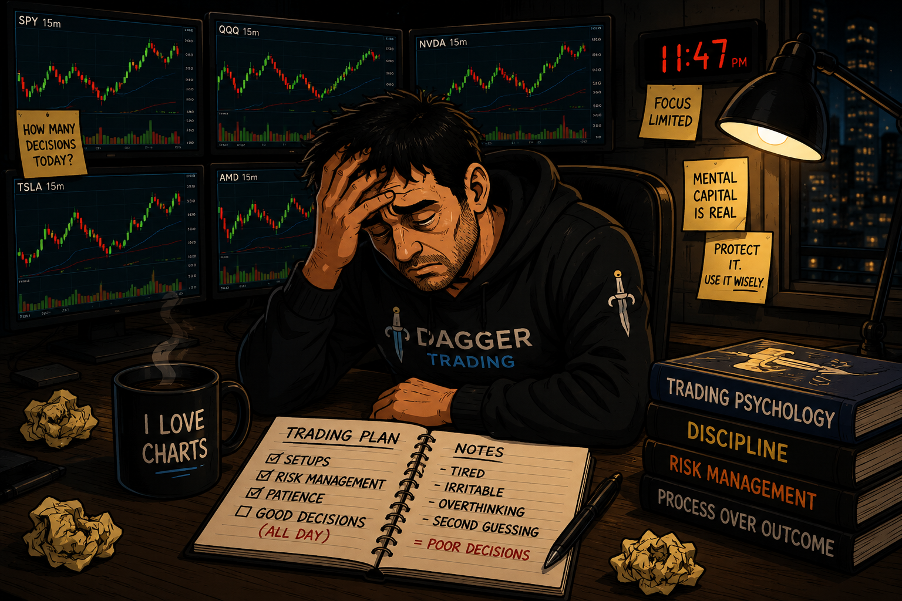

Trading Psychology
Decision Fatigue
When the trader gets tired before the market does.

Sometimes the problem isn't the strategy. It's that your focus, patience and judgment have been under pressure for too long.
1. Trading's Version of Chess Blindness
A tired chess player doesn't suddenly forget how the pieces move. The player still understands tactics, positioning and strategy.
But after sustained concentration, the player may overlook something that would normally be obvious: a hanging piece, a simple tactic or an opponent's threat.
Trading can feel similar. You still know your levels, setup criteria, risk rules and confirmation signals.
The problem is that you may become less consistent at applying what you already know.
2. What Decision Fatigue Can Look Like
Focused
Fresh mind. High standards. Clear decisions.
Taxed
Scanning, managing, waiting and repeated decisions build mental demand.
Fatigued
Patience falls. Standards begin to loosen. “Good enough” starts looking acceptable.
Vulnerable
Impulsive trades, chasing, overtrading or emotional decisions become easier to justify.
3. Scalping
Rapid-fire decisions.
- Entry or wait?
- Add or reduce?
- Take the partial?
- Exit or re-enter?
- Is momentum still there?
4. Day Trading
Hours of continuous evaluation.
- Price action and volume.
- Levels and momentum.
- Multiple watchlist names.
- News and market direction.
- Repeated decisions not to trade.
5. Swing Trading
Slower doesn't mean immune.
- Scanning large numbers of charts.
- Researching catalysts and earnings.
- Comparing several setups.
- Allocating capital.
- Over-monitoring an open position.
6. Mental Capital
Traders protect financial capital with position sizing, stops and maximum-loss rules.
It can also help to think about mental capital: the attention, patience, restraint and emotional control you are asking yourself to use throughout the session.
A calm session may leave you sharp for hours. A stressful, decision-heavy session may wear down your focus much sooner.
7. Warning Signs
- You take setups you rejected earlier.
- You enter before confirmation because you're tired of waiting.
- You keep changing your thesis.
- You start negotiating with your rules.
- “Good enough” starts feeling good enough.
- You chase moves you'd normally let go.
- Irritability or frustration starts affecting decisions.
- You no longer clearly know where the trade is wrong.
8. Protect Decision Quality
- Take real breaks away from the screen.
- Track time and mental intensity, not only trade count.
- Recognize when losses or missed moves are raising emotional strain.
- Know your best decision-making window.
- Predetermine entries, risk and invalidation.
- Stop when your standards begin changing.
9. What the Research Suggests
- Professional analysts: forecast accuracy declined as analysts made more forecasts, while reliance on shortcuts increased.— Journal of Financial Economics
- Institutional IPO pricing: more previous pricing decisions were associated with less accurate bids and lower subsequent profits.— Economic Modelling
- Bank credit decisions: decision patterns changed over the workday, with greater reliance on easier or default choices.— Royal Society Open Science
- Experimental decision-making: mental fatigue can make economic decisions less consistent rather than simply more or less risky.— Experimental research / PMC
10. Key Takeaway
Don't measure decision fatigue only in hours. Pay attention to what the session has cost you mentally.
11. Go Deeper (optional reading & practice)
Decision fatigue doesn't run on a clock
There is no universal point when decision fatigue appears. One trader may stay sharp through a long, quiet session. Another may feel mentally drained much sooner after several losses, rapid decisions, missed moves or a highly volatile market.
The better question isn't “How many hours have I traded?” It's “Am I still making decisions with the same clarity and standards I had when I started?”
What mental capital means here
Mental capital is a useful way to think about the limited attention, patience, restraint and emotional control you bring to a trading session. It isn't a literal account balance or a precise psychological measurement.
A calm hour of waiting may demand relatively little. An hour filled with losses, re-entries, missed moves, frustration and constant evaluation may demand much more. That is why two sessions of the same length can feel completely different.
Losses can make the workload heavier
A loss doesn't automatically cause poor decisions. But repeated losses can add frustration, disappointment and pressure on top of the normal cognitive work of trading. As that mental and emotional load builds, a trader may become more vulnerable to forcing setups, chasing, overtrading or revenge trading.
Why the chess analogy works
Chess blindness isn't the same thing as decision fatigue, and fatigue isn't its only cause. The comparison is useful because a tired player can still know the game while overlooking something they would normally catch. A trader can experience the same gap between knowing the process and applying it consistently.
Practical exercise: check your mental capital
Before taking another trade late in a demanding session, ask:
- Am I still focused, or am I just staring at the screen?
- Would I take this exact setup with a fresh mind?
- Am I following my normal criteria or negotiating with them?
- Have recent losses, missed moves or frustration changed what I'm willing to accept?
Don't measure decision fatigue only in hours. Measure it in changes in yourself.
Research & further reading
- Professional analyst decision fatigue — Journal of Financial Economics.
- Institutional IPO pricing and decision fatigue — Economic Modelling.
- Bank credit officers and decision fatigue — Royal Society Open Science / PMC.
- Mental fatigue and economic decision-making — Experimental research / PMC.
Educational content only. “Mental capital” is used here as a practical metaphor for mental and emotional resources, not as a clinical measurement. This lesson discusses trading behavior and published research; it is not psychological or financial advice.